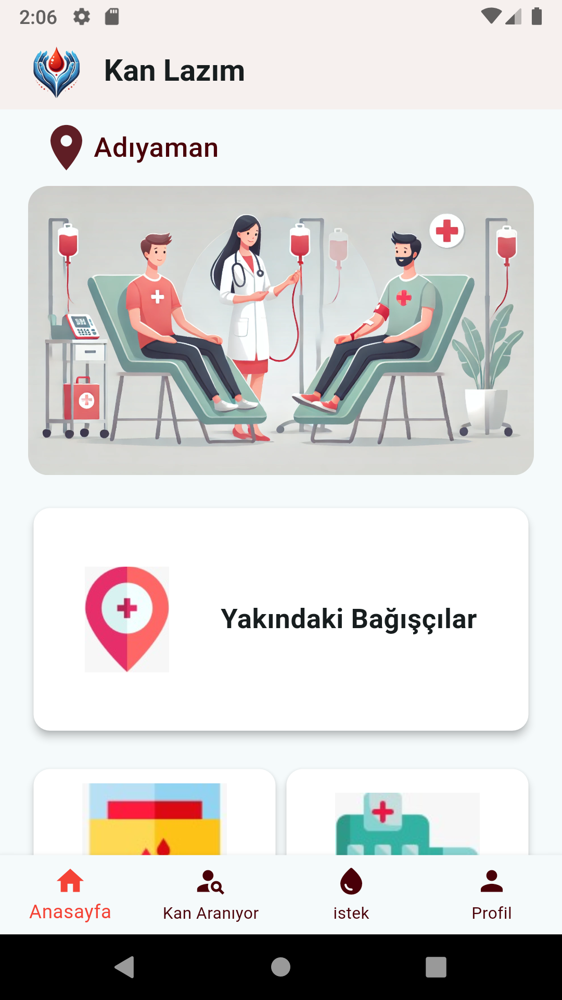

Hayat Kurtarmak Şimdi Daha Kolay
Kan Lazım uygulamasıyla ihtiyaç sahiplerine hızlıca ulaşın
Hemen İndirProje Hakkında
Özellikler
Ekran Görüntüleri


Kan Lazım uygulamasıyla ihtiyaç sahiplerine hızlıca ulaşın
Hemen İndir